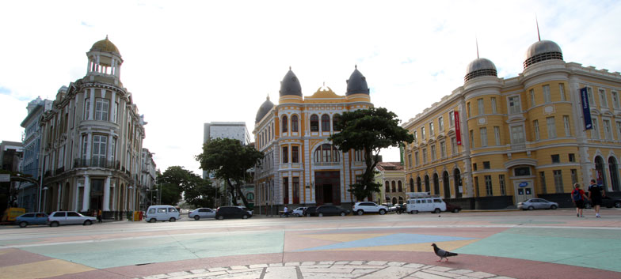
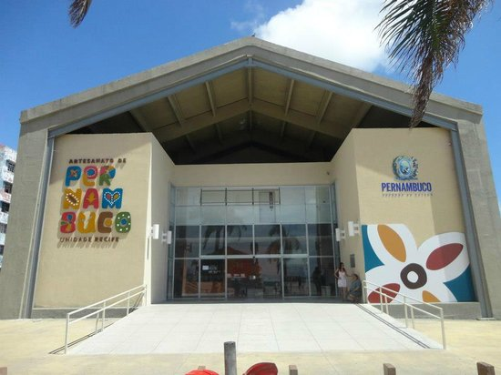

O Que Fazer Recife Antigo
Marco zero
Quem visita o Recife Antigo precisa passar pelos principais marcos históricos da região, e um deles é o Marco Zero.
Centro de Artesanato de Pernambuco Unidade Recife
Localizado em frente à Praça do Marco Zero em Recife é parada obrigatória para quem gosta de artesanato diversificado. Há peças de cerâmica, madeira, metal, renda e muito mais e os preços são acessíveis.